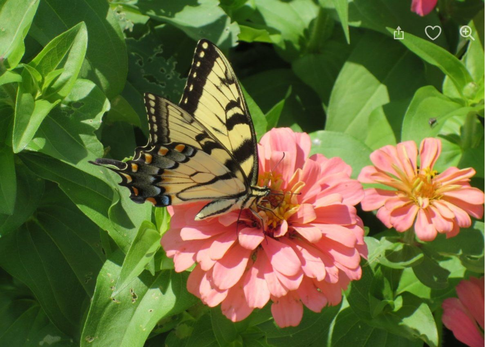
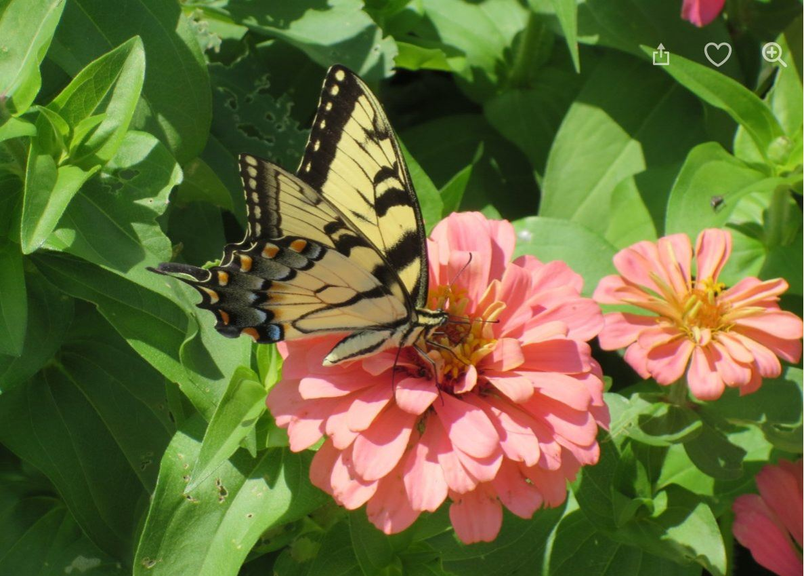

A few favorite images
I have always enjoyed photography so these are some of my own images.

One of my favorite movies is Mary Poppins. It is "practically perfect in every way." Here's the IMDB page about the movie.
My favorite genre is '80s-90s alternative, although I enjoy many types of music.
It's never a bad time to listen to Camper van Beethoven.
You can read about CvB at their website, which I have never viewed until this moment.
I have always enjoyed photography so these are some of my own images.

It's been years since I've had time to read favorite books over and over. I enjoy reading, but have limited time - so I don't think in terms of absolute favorites, but rather of recently enjoyed books. Some books I've enjoyed in the past year are:
| Title | Author | Link |
|---|---|---|
| The Pull of the Stars | Emma Donoghue | Author's web page |
| The Island of Sea Women | Lisa See | Author's web page |
| The Evolution of Calpurnia Tate | Jacqueline Kelly | Publisher's web page |
| The Giver of Stars | Jojo Moyes | Author's web page |
| Grandma Gatewood's Walk | Ben Montgomery | Publisher's web page |